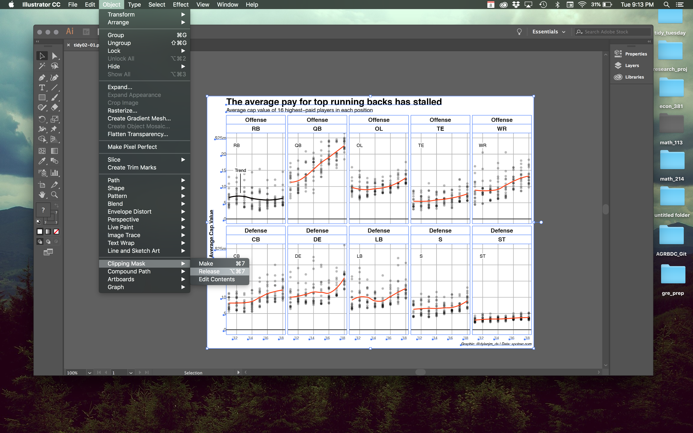

| tags: [ TidyTuesday tidyverse adobe illustrator ] categories: [Posts ]
Tidy Tuesday Week 02
This post will walk us through the second week of #TidyTuesday. #TidyTuesday is a weekly social data project put on by the R for Data Science learning community. Every week a data set, article, and graphic are posted and users are encouraged to either recreate the graphic themselves using R or create their own take on the graphic using the data provided.
This week, we’ll be using data from a fivethirtyeight article, “Running Backs are Finnaly Getting Paid what they are Worth”. In this blog post I am going to try to recreate the original graphics from scratch to the best of my ability. I’ll be using a mix of ggplot2 and adobe illustrator to create these graphics. If you are currently a student, it’s possible to get the entire adobe creative suite for only $20 a month. This is still a little expensive, but if you use it enough, it easily pays for itself.
Here are the original graphics:


Let’s get started! Here are a few libraries we’ll need to visualize these data! Also, let’s go ahead and read in our data set and view a small sample as well.
library(tidyverse)
library(readxl)
library(here)
library(glue)
library(ggrepel)
library(huxtable)nfl.data <- read_xlsx(here("data/tidy_tuesday_week2.xlsx"))
nfl.data[,1:6] %>%
head() %>%
hux(add_colnames = TRUE) %>%
set_bold(1, 1:6, TRUE) %>%
set_bottom_border(1, 1:6, 1) %>%
set_right_padding(10) %>%
set_left_padding(10) %>%
set_caption('NFL Data') %>%
set_number_format(NA) %>%
print_html()| year | Cornerback | Defensive Lineman | Linebacker | Offensive Lineman | Quarterback |
| 2011 | 11265916 | 17818000 | 16420000 | 15960000 | 17228125 |
| 2011 | 1.1e+07 | 16200000 | 15623000 | 12800000 | 1.6e+07 |
| 2011 | 1e+07 | 12476000 | 11825000 | 11767500 | 14400000 |
| 2011 | 1e+07 | 11904706 | 10083333 | 10358200 | 14100000 |
| 2011 | 1e+07 | 11762782 | 10020000 | 1e+07 | 13510000 |
| 2011 | 9244117 | 11340000 | 8150000 | 9859166 | 13250000 |
By looking at the data, my mind is already thinking that we are going to have to gather() these data in order to plot it effectively. We are also going to need to create the abbreviations of the positions from scratch, and develop the order we are going to want to order our facets later in the plotting. To do this, we’ll create a tribble, which is essentially a row-wise created table that is visually easier to interpret when looking at the code. Notice how a tribble is created differently than other tibbles or data.frames. This is merely syntactic sugar and doesn’t provide much in terms of functionality besides ease of readability. For more information on tribbles, run ?tribble.
# Inspiration from #rstats users elsherbini to use a tribble here
# Now we can get the abbreviations easily
# This will also double as our fct_relevel for later
# abb is an abreviation for abbreviation!
shorthand <- tribble(
~position, ~abb,
"Running Back", "RB",
"Quarterback", "QB",
"Offensive Lineman", "OL",
"Tight End", "TE",
"Wide Receiver", "WR",
"Cornerback", "CB",
"Defensive Lineman", "DE",
"Linebacker", "LB",
"Safety", "S",
"Special Teamer", "ST"
)Next, we’ll want to create the data sets we’ll use to plot. Like I mentioned before, we are going to want to gather the data set into long form. For those who may not be aware, we are doing this because typically is best practice to have a data set where each row is only one observation. In the original data set, each row had an observation for Quarterback, Running Back, Safety, etc…For more information on this topic read this vignette.
After gathering the data, we are going to add in the tribble we created up above so we have our abbreviations at the ready. Next, we are going to edit and create a few different columns. Here is a quick outline:
- Change the order of our position factors so they facet in the correct order.
- Do the same as above but in the case for the abbreviations.
- Scale the pay down so it is read in terms of millions $.
- We want to only grab the last two digits of our year, so we’ll use modulus division to get those numbers.
- We also want to be able to split the positions up into defense/offense. We’ll take care of that with a
case_when()statement.
Following those changes, we’ll want to group by year and position so we can get the top 16 paid athletes for each year and position. I have to grin every time I use the top_n() function, it’s just smooth as butter 🥞🥞🥞!
# Let's get our data down to the Top 16 Athletes Long Format
top.paid <- nfl.data %>%
gather(key = "position", value = "pay", Cornerback:`Wide Receiver`) %>%
left_join(shorthand, by = "position") %>%
mutate(position = fct_relevel(position, shorthand$position),
abb = fct_relevel(abb, shorthand$abb),
pay = pay/1e6,
year = year %% 100,
type = factor(case_when(
abb %in% c("RB", "QB", "OL", "TE", "WR") ~ "Offense",
TRUE ~ "Defense"
), level = c("Offense", "Defense"))) %>%
group_by(year, position) %>%
top_n(16, wt = pay) %>%
na.omit %>%
ungroup()| year | position | pay | abb | type |
| 11.00 | Cornerback | 11.27 | CB | Defense |
| 11.00 | Cornerback | 11.00 | CB | Defense |
| 11.00 | Cornerback | 10.00 | CB | Defense |
| 11.00 | Cornerback | 10.00 | CB | Defense |
| 11.00 | Cornerback | 10.00 | CB | Defense |
| 11.00 | Cornerback | 9.24 | CB | Defense |
Much better! For the next data set, we’ll get rid of the “Special Teamer” position since it is not in the second plot. Next we’ll have to do some hacky summarising to get exactly what we want. We want to get the percent of money spent on each position for each year. This means we’ll need the total amount spent for each year and then use that as the denominator and group by again but only then creating a percent.paid column.
# Let's continue to clean our data to get the proportions
# spent on athletes
position.percent <- top.paid %>%
filter(!position %in% c("Special Teamer")) %>%
group_by(year, position, abb, type) %>%
summarise(total.paid = sum(pay)) %>%
group_by(year) %>%
mutate(percent.paid = total.paid/sum(total.paid)) %>%
ungroup()| year | position | abb | type | total.paid | percent.paid |
| 11.00 | Running Back | RB | Offense | 103.57 | 0.09 |
| 11.00 | Quarterback | QB | Offense | 186.41 | 0.16 |
| 11.00 | Offensive Lineman | OL | Offense | 154.89 | 0.13 |
| 11.00 | Tight End | TE | Offense | 87.07 | 0.07 |
| 11.00 | Wide Receiver | WR | Offense | 138.94 | 0.12 |
| 11.00 | Cornerback | CB | Defense | 129.86 | 0.11 |
Perfect! Now since my goal was to make these plots from scratch I am going to create my own fivethirtyeight theme. I could use theme_fivethirtyeight() that comes in library(ggthemes), which is a greate boiler-plate theme to creating nice looking plots. But I want to get better at understanding the dynamics of making custom plots so we’ll go ahead and roll our own. Also, I went ahead and created a custom color pallete with the colors from the second plot. I ended up having to use an eye dropper from w3 School’s Online Html Color Picker. If you know a better way to get color codes, please let me know, as it was a painstaking process!
wannabe_538 <- theme(plot.background = element_rect(color = "#e6e6e6"),
panel.grid.minor = element_blank(),
plot.title = element_text(face = "bold", size = rel(2)),
plot.subtitle = element_text(size = rel(1.2)),
plot.caption = element_text(face = "italic"),
panel.background = element_blank(),
axis.ticks = element_blank(),
panel.grid.major = element_line(color = "#b6b6b6"),
strip.background = element_blank(),
strip.text = element_text(face = "bold", size = rel(1.3)),
axis.title = element_text(face = "bold", size = rel(1.2)),
axis.title.x = element_blank())
# Color pallete for the lines, I ended up switching a few colors
# in Adobe Illustrator
col_pal <- c("#222222", "#8e76ac",
"#f9d75a", "#d47bad",
"#56ad74", "#8aaef6", "#b6b83c",
"#dd575a", "#aa7f77", "#6e6e6e")
names(col_pal) <- levels(position.percent$position)Okay, now that I have my theme created and all my data cleaned it’s time to start plotting. How I’m going to approach creating these plots is that I will go as far as ggplot will possibly take me, and then transition into using Adobe Illustrator to finish up the job. The primary goal is that I use Illustrator as minimal as possible. If at anytime you see something, that I could’ve done in R, please let me know!
# We'll need this small dataframe to create the Trend Label and Line
# This will make adding the segment to the plot easier
trend_arrow <- tibble(year = 12.5, position = factor("Runningback"), pay = 15,
abb = factor("RB"), type = factor("Offense"))
# First Plot
ggplot(top.paid, aes(x = year, y = pay, group = position)) +
geom_point(alpha = .3, size = 2) +
geom_smooth(color = "orangered", size = .9, se = FALSE) +
geom_smooth(data = filter(top.paid, abb == "RB"), color = "black", se = FALSE) +
scale_y_continuous(expand = c(0,0),
limits = c(-1.5, 26.5),
labels = c("0", "5", "10", "15", "20", "$25m")) +
scale_x_continuous(labels = scales::dollar_format(prefix = "'")) +
geom_label(aes(x = 12, y = 22.7, label = abb),
fill = "white", label.size = 0, label.padding = unit(0.15, "lines")) +
geom_label(data = trend_arrow, aes(x = year, y = pay, label = "Trend"),
fill = "white", label.size = 0) +
geom_segment(data = trend_arrow, aes(x = 12.5, xend = 12.5, y = 14, yend = 8)) +
facet_wrap(~ type + abb, ncol = 5) +
annotate("segment", y = 0, yend = 0, x = -Inf, xend = Inf, color = "#4d4d4d",
size = .9) +
labs(title = "The average pay for top running backs has stalled",
subtitle = "Average cap value of 16 highest-paid players in each position",
x = "Year",
y = "Average Cap Value",
caption = "Graphic: @dylanjm_ds | Data: spotrac.com") +
wannabe_538 +
theme(axis.text = element_text(hjust = .8),
axis.text.y = element_text(size = rel(1.2), margin = margin(r = -2.8))
)
Okay, so now at this poing I’m going to take this graphic into Illustrator and make some small adjustments. After exporting this graphic into a .PDF file, I opened it in Illustrator and released the clipping mask so I can edit each part individually.

Now, I’ll just make a few small adjustments to the titles, font, and size of the graphic… and WALLAH!
As you can see, I have only made minor adjustments to the plot. Using Illustrator, I was able to clean the plot up and make the small details count. Using other tools can be helpful in your pursuit of beautiful graphics. I was satisfied with my ability to recreate the graphic with using only R on the second graphic. Below is my attempt at recreating the graphic!
# Proportions plot
ggplot(position.percent, aes(x = year+2000,
y = percent.paid,
color = position,
group = position)) +
geom_point(alpha = .5, size = 2.5) +
geom_smooth(size = .9, se = FALSE) +
facet_wrap(~ type) +
scale_y_continuous(expand = c(0,0),
limits = c(-0.01, .25),
breaks = c(0, .05, .1, .15, .20),
labels = c("0", "5", "10", "15", "20%")) +
scale_color_manual(values = col_pal) +
geom_label_repel(data = filter(position.percent,
year == "18"),
aes(label = abb),
label.size = NA) +
annotate("segment", y = 0, yend = 0,
x = -Inf, xend = Inf,
color = "#4d4d4d", size = .9) +
labs(title = "Teams are spending less on RBs",
subtitle = "Percent of money spent on top 16 players at each position",
caption = "Graphic: @dylanjm_ds | Data: spotrac.com",
x = "Year", y = "Percent spent on each position") +
guides(color = FALSE) +
wannabe_538
So that was week two of #TidyTuesday! I hope you were able to learn from my code and realize that using other software can be a helpful tool when creating graphics. ∎